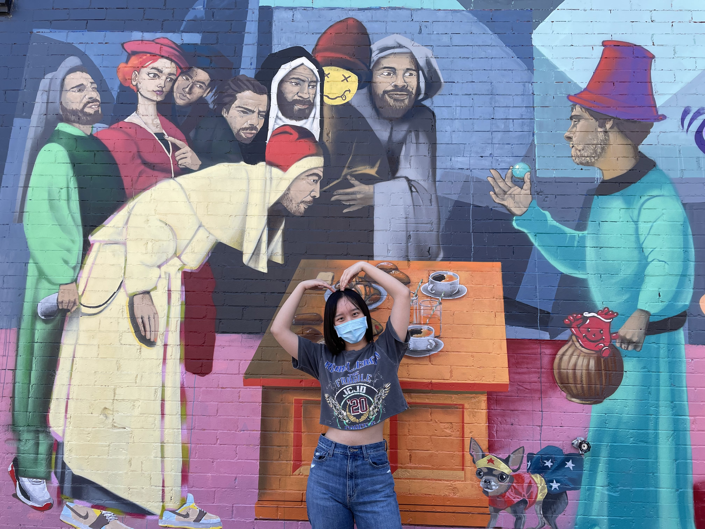

Welcome to My Blog!
Updated Nov 2024
Welcome to my little corner where I share cool projects, fascinating discussions, and adventures from my studies and travels.
Browse through the categories to read topicsthat you might be interested in :)
New Cities
Winter 2022
In Winter 2022, I took the New Master-Planned Cities course with Dr. Sarah Moser at McGill University. This course examines the origins, designs, motivations and cultural politics of planned cities, focusing primarily on those currently under construction in Africa, the Middle East and Asia.
Nation Building for Dummies is our fun take on breaking down how nations use cities to reflect their identity. From culture and geography to architecture and politics, we looked at how these elements play a role in shaping a country’s image. By diving into examples like Malaysia’s Putrajaya, Ecuador’s Yachay City, and India’s Chandigarh, we explored how urban design can express everything from religious values to a push for modernity.
This project was a creative way to wrap up what we’ve learned in this fascinating course. We wanted to share these ideas in a way that’s both entertaining and easy to understand. It’s interesting to see how cities and spaces aren’t just places but tools that reflect and shape a nation’s story.
This is a collection of my discussions in Facebook group about various aspects of new cities. Topics covers from sustainability to cultural identity and economic development.
There are many insightful articles brought up by other classmates about the new capital city in Malaysia, and here is another one discussing the colonial legacy in Jakarta, the current capital, and its relation to the new capital project. I really like the 'alun-alun' example in the first part to demonstrate how colonialism reflects on the urban layout. Alun-alun is a large open lawn area that serves as a gathering and recreation spot in every city, even in a small town. However, Jakarta does not have an alun-alun. As the author points out, "This is because much of the city's footprint was laid out by foreigners to suit their tastes and needs. It was a city built to serve the commercial interests of a foreign power, and many, though not all, of its modern urban problems, partially stem from that." Hence, the new capital, Nusantara, will represent from the ground up an Indonesian vision of the country and its future, free from colonial legacies.
I'm considering the question, "Does Indonesia really need a new capital? Can their attempts to build new cities be accomplished by transforming existing ones?"
I started to ask myself these two questions when thinking of new city projects since last time talked with Wukai Jiang about Busan's Eco-Delta Smart Village. His thoughts really inspired me, that Occam's razor applies to new city projects as well, entities should not be multiplied beyond necessity. New cities are needed only if it is impossible to transform the existing cities, and what we need is smarter/ green/ decolonial/… cities, rather than more cities. When it comes to Nusantara, is it a necessary project for Indonesia to completing get out of its colonial footprint, a redundant project demonstrating the government's incompetence and bad performance with the existing capital city, or a corruption scheme disguised as 'building the new city' as Dompak?
Paris or China: Can you tell real thing from replica?
We discussed a little bit about this phenomenon in class before and I want to elaborate more from my understanding.
In China, we have a derogatory phrase "崇洋媚外", which refer to a kind of mental state that worships western culture but despises our own culture heritage. This is extensively used when we discuss culture, social life, politics even economics… I think replicating foreign architecture is a very typical example of worshiping western culture.
The origin of this mental state could be traced back to the late 19th century and divided into 3 eras. First, China in the late Qing Dynasty became semi-feudal and semi-colonial since the late 19th century and lasted for a half-century. Chinese elites found that China lagged behind the West in every aspect, military, politics, technology, culture, education and so on. This provoked elites to advocate ''learning from the West and transforming China''. The reform progressed from pure technology to culture and gradually warped over time; for example, the "abolition of Chinese characters" was once a popular proposal among most outstanding intellectuals. This was the first time that the social phenomenon of worshiping western culture while despising Chinese culture heritage appeared in Chinese history. As a result of colonization, we can see that the culture of entire conversion to the colonizer's culture was first extensively spread among the elites.
The establishment of the People's Republic of China (1949) was the start of the second period and the denial of this mental state. During this time period, China eliminated and expelled imperialist armed forces, confiscated imperialist assets in China, and entirely got rid of its semi-colonial status, therefore eradicating the political and economic foundations for this mentality. Additionally, China was blockaded by the United States and the Soviet Union, private international relations were effectively shut off. The worship of western culture temporarily faded into oblivion.
The resurgence of this mentality began with the opening of China in 1978. Only the elites had access to western culture whereas civil society remained secluded from it in the late 19th. But in the 1980s, more and more Chinese civil could get into the Western culture from media, books, television, individual experience, and stories from others. the citizens have been actively engaged in international exchange, such as tourism, education and sports. Hence, similar to the late 18th century, the idea of learning western of all aspects and self-depreciation prevailed again and was more intense than ever before based on the huge gap of development in the late 20th century. The generation currently in power was greatly inspired by the 1980s and was naturally keen to emulate many aspects of Western culture, including architecture. It's worth emphasizing that the vast majority of senior Chinese officials were not permitted to leave China unless there were exceptional circumstances, and when these two elements combined, they inevitably chose numerous schemes emulating foreign design.
As the old saying goes, the grass is always greener on the other side of the fence. I think both China and Western have outstanding cultural heritage, but the social phenomenon of “worshiping western culture while despising our own cultural heritage” has a profound effect on Chinese society, as whatever is foreign is labelled as “outstanding, luxury, premium”. Another example is that developers tend to name their new real estate projects in English-translated Chinese to label them as luxury neighbourhoods. My aunt once lived in a middle-class district in peri-urban Shanghai where there are 10 neighbourhoods and all are named in English, such as the translation of “Bruce County”.
With the rapid development of Chinese economics and the improvement of Chinese average living standards, more and more people began to reflect on this deformed social phenomenon. In fact, many citizens criticize and scold the government's behaviour of blindly replicating foreign architecture. We start to realize that appreciating our own precious cultural heritage is as critical as absorbing excellent western culture. In 2020, the Chinese Ministry of Housing and Construction expressly informs large public buildings are strictly prohibited from copying or imitating. This is in corresponds to the Chinese policy of rebuilding cultural confidence.
Busan’s Eco Delta Smart Village
The article and the comments have made me consider the relationship between culture and the various perspectives on the new city project.
After reading the article, my first reaction was the same as Jeong Mi Sook's: "What a fantastic and futuristic experiment!" How come this is happening rather than just being shown in a promotional video? I want to be a part of it and live there." I also shared this article with some Chinese friends, and they all showed a technology-optimistic attitude towards this project. However, as I browsed the comments, I found that most people criticize it in the context of the environment, individuality, inorganic development, data privacy, etc. This inspires me to think about the relationship between different cultures and their reaction to new cities. How other groups are influenced by their culture, which leads to them having different views of the new city from different perspectives, is a fascinating topic that deserves more study.
Just as the first comment stated, “Different strokes for folks raised in different societies.” From my perspective, the Asian community has a tendency to worship high technology and the prosperity of industrialization, prioritizing them when considering pertinent issues. In comparison, western society emphasizes more on justice and equality, such as environmental justice, social justice, marginalized community, racial equality, and privacy. This results in enormous distinctions when individuals from diverse cultural backgrounds consider the same project and may even determine one project's outcome. Nothing is perfect; the new city is not a panacea or magic bullet that could perfectly solve every issue or satisfy everyone. Thus, when we make comments about the new city project, I believe it is critical to understand which aspects we prioritize and why others hold divergent views and think in particular ways.
Our Urban Future May Be a City in a Box
Check out this 15-minute video, I really like the beginning of this clip, the satellite motions illustrate how quickly the new cities are being built and how fascinating they are. (Isn’t the narrator’s voice familiar
Previous discussions about Songdo primarily focus on the privacy issue and district design, this video brings up very detailed design stories behind the scenes and illustrates another intriguing concept: “The city in a box”.
The majority partner of Songdo is Gale International, a privately owned real estate development based in New York. Gale draws on the precedent culled from other successful places, such as Boulevards of Paris, Grand Canal of Venice, Central Park of New York City, Row house of Boston Bay. Packing all the successful designs, they wish to create a replicable model city and duplicate the Songdo Model to the rest of the world. The current new project they are working on is Meixi Lake in Changsha, China. "We visited Changsha several times." The representative of Gale International stated that the company planned to select a similar site in China. They plan to build Meixi Lake into an international integrated functional area, including international exhibition center, office area, innovation center and inhabitant area.
This concept reminds me of what we learnt about the Korean LH corporation. It exports ‘the Korean new town model’ to the world, especially in Africa. This model is very standardized as well, constructing a new city and context-appropriate industry in 5 years. What do you think of these standardized models?
An Update on China's Largest Ghost City
I am quite interested in Ghost cities in China, so after class I look through some intriguing articles and here is the one. Unlike most of the Op-Eds criticizing low occupancy and real estate bubble in Kangbashi, the author thinks Ghost city is a misreading of Kangbashi. “The presence of unoccupied homes is less of a calamity and more the result of complex social, political, and economic forces that’s more or less a normal part of China’s particular method of new city building and vitalization. And the emptiness of Kangbashi itself is a deception. In point, you can’t just show up in a developing Chinese city, take some pictures of empty buildings, and jump to the conclusion that they are harbingers of an impending economic doomsday.”
Beyond that, he further points out the design creates a car city, and the quality of urban life may be jeopardized by a lack of consideration of street life. The spacious boulevard and few walking area led to few places for inhabitants to hang out, which make Kangbashi still looks like a ghost city, with 100,000 people here.
A lot of urban design has been criticized for having too many lanes and neglecting street life, such as Songdo and Kangbashi. Many articles argue that the expanding road network won’t solve traffic congestion, only leading to more drivers and more cars on the street. However, this is a trending, even standardized street design in Chinese new city. Large population and traffic congestion may both be factors that taken into account. What do you think of this kind of street design?
Dompak: Tale of Corruption
I looked up some articles and videos about Dompak after the guest lecture, and here is the one written by Sarah, discussing unprecedented corruption. At the deadline for completion, only a third of the city infrastructure had been completed, while 75% budget had been spent. The loss of the initial investment monies, the stalled construction, and the missing fines all point to an Indonesian political climate rife with corruption.
I brought up the corruption issue in Dompak to reflect on the new planned capital city, Nusantara in Indonesia. I saw many classmates post very insightful articles on this new city project, focusing on ecology, the relocation of the capital, and the lessons to be learned from new capital projects in other countries. From my perspective, corruption would still be an important issue to deal with in the new capital project. As Sarah mentioned, “In a climate of rampant corruption, government officials do not appear to fear any consequences of their actions… new cities such as Dompak are proving to be an unprecedented opportunity for corrupt officials to personally enrich themselves.” Over one decade, the Corruption Perceptions Index of Indonesia has not changed a lot, rising from 32 to 38.
I am not very familiar with the government structure of Indonesia, so I wonder whether the level of the project would have an impact on corruption. In other words, Dompak is designated provincial capital while Nusantara will be a national capital. Corruption is certain to exist in Nusantara, but will government officials be less corrupt out of fear of failing to execute the city's most significant new city project? I would love to hear your opinion on this.
Xiong'an New Area: 5 Years On
While the delineation of the Xiong'an New Area is significant for the party, the period is not optimal for Xiong'an. CCP has extremely high expectations for Xiong’an, but I do not feel that new technologies and models proposed by numerous institutions will determine Xiong'an future development.
I think that what will truly facilitate the development of Xiong’an is the fact that the central government has granted Xiong'an the right to explore through institutional mechanisms and a more expansive exploration space than ever before. However, even with fault tolerance and exploration, there will be policy instability for a long period of time.
Construction of a new area in China tends to be extremely rapid. Once the government has decided to designate a piece of land, it frequently completes dozens of square kilometers of construction within two years. Xiong'an is unlike any other new district built in China in the preceding decades in this regard. The government attempts to investigate the land use system, the property rights system, the relationship between government and business, the relationship between government and enterprises, and the reorganization and reconstruction of the complex relationship between short-term economic benefits and long-term public services, as well as long-term population quality improvement, at each stage of the construction and development process.
'New Town', Same Old Mistakes
Thank you for posting this article! The lack of accountability isn’t a new topic when discussing new city projects. The gross delay of the Purbachal project reminds me of Dompak. 75% budget had been spent, whereas only a third of the city infrastructure had been completed at the deadline for completion of Dompak. When new cities became an unprecedented opportunity for corrupt officials to personally enrich themselves, it is not surprising to face the loss of the initial investment monies, the stalled construction, and the missing fines.
This inspires me to think about the ‘PowerPoint City’ Sarah mentioned in the recap lecture. Several possible reasons include: Government tends to make unrealistic magnificent plans, so it’s nearly impossible to complete; Unexpected excess funding shortage further leads to incompletion while in the process; The government transparency index is very low, which tightly related to lack of accountability and corruption. I browse google scholar and haven’t found anything relevant article systematically examining the main reasons behind the unfinished city projects. Probably a good term paper topic for upcoming students
Utrecht's Exemplar City Design That Prioritises People Over Cars
This article discusses a new neighborhood called “Merwede”, which is located in Utrecht, Dutch. In 2020, Utrecht unveil its latest masterplan for a completely car-free city.
Compared to other cities that claim to be car-free (e.g., Jeddah and the Line), this project seems more attainable and reasonable to me. There is a deep tradition in Dutch of biking instead of driving. The total population of the Netherlands is 1.7 million with overall 2.2 million bicycles and the bicycle pathway spans more than 35,000 km across the entire country. Hence, Dutch is known for the kingdom of cyclists. This illustrious reputation is best reflected in Utrecht, which is home to the world’s largest bike parking lot.
In GEOG217, we learnt that urban imagination has two distinct aspects: Reimage urban life and powers to reshape cities. The former emphasizes relationship between cities and inhabitants, while the latter addresses the ideology, social status of the city planners. Regarding the relationship between city and its inhabitants, I believe that the residents are the owners of the city and should be the primary factor when planners make the masterplans. However, many city plans have reversed the relationship between the two, trying to display the developing progress of the country through grand narratives while ignoring inhabitants’ custom and tradition. This, I believe, is what Merwede shines at. The city is not visual spectacles with towering skyscrapers or giant, representative buildings. It is the place where inhabitants live. Merwede does an excellent job of respecting local culture while integrating the new concept city planning based on their custom.
King Mohammed VI Green City
In September 2010, Morocco King Mohammed VI unveiled a new city project “King Mohammed VI Green City” (VVM6). This new city is adjacent to Benguerir, an existing city of 80,000 working class with high unemployment. According to the master plan, VVM6 is a new city whose identity revolves around knowledge, research, and sustainable development; an ambitious urban project built with the Mohamed 6 Polytechnic University at its core and as a driving power for its development.
VVM6 is a spatial expansion of the Benguerir. This prompts me to think about the tight relationship between the existing city and its adjacent new city. It seems like planners want to address the current economic problem in Benguerir by constructing an adjacent new city. However, the main economic industries are so distinguished from each other that I wonder how these two cities will make full leverage of spatial proximity to boost economic development. VVM6’s economy will be centred on universities and R & D, which will attract educated elites; while Benguerir is known for the phosphate rock industry, which is crowded with working class. Apart from that, how will VVM6 embrace Benguerir's current inhabitants?
The previous student Chloe McGuire also shared an article about this city. They discussed the changes in the city model in the post-pandemic period, and how might VVM6 planners modify their plan in response to the publicization of private space. You can also take a look at this article if you find it’s an interesting topic. The Big Picture: Green City, Benguerir
There are not many videos or articles about this city, even though the project was announced 10 years ago. Please feel free to attach the latest updates if you found some!
China's Largest Ghost City Booms Again Thanks to Education Fever
The author tries to explore the main driving force behind the renewed Kangbashi, arguing that school district effects on housing prices predominate. However, I want to point out that there are some arguments that is not that accurate in my point of view.
The article states “Tight regulations surrounding school districts require parents who want to send children to a particularly coveted school to own a home within the district.” This concept is correct when we talk about Chinese elementary school, but not high school or middle school.
Chinese students have a provincial-level high school entrance examination at the end of their grade- 9, the results of this one-time examination determine which high school you can enter. Similarly, the ranking and scores of the national university entrance examination are the only factors that determine which university one can enter. Top public high schools(not private schools) like Ordos NO.1 high school select students only based on scores, just like McGill. Even if one parents own a home near Ordos No.1 high school, one cannot have the chance to enter without excellent scores in that exam. In terms of middle school, tier 1 middle schools will organize their own exams for grade-6 students and give offers to satisfied students, students can choose the school if they pass two or more. Take me as an example, I took 2 different entrance exams at 12, I failed the best one (270 out of 8000 students) and passed the second. If I didn’t take these exams, I could go to a middle school near my home, but it has much lower educational quality. Overall, scores determine whether one could enter top middle school, high school, and universities, rather than purchasing a new house near a relevant school.
In addition, Ordos NO.1 high school provides 5 residential apartments which could contain 4000 students in total. Residential apartments are quite general among top high schools in China since many top students may come from other cities in the same province. I found the planned enrollment number of the school is 1152 in 2020, which is announced by the Ordos government. This implies that there are enough dormitories to accommodate all the students. Fun fact, public high school residential fee is super cheap in China, ranging from 500 -1000 CNY ( 100-200 CAD) per term.
My opinion is that parents purchase new apartments near school simply because they want to live with their children, talk to them and support them in this special period (since we are not allowed to use phones in high school, which means parents can only talk to their child on 1-2 days a week). Everyone is under high pressure in High school. We had a midterm, final, monthly even weekly test on 6 disciplines, the university entrance exam scores determine our university, no regular grades, no extracurricular, only one-time ranking among 400,000 grade-12 students in the same province. (You have to get the first 50 out of 400k if you want to enter Peking or Tsinghua University). Think about how stressed students are. Naturally, parents want to take good care of their children, comforting them when they are frustrated, encouraging them when they make progress, making sure their children are physically and mentally healthy, talking to them from time to time. As a person who experienced this period, I know how much my parents were worried about me and how much they care about my mind. I think this is one reason that cannot be ignored.
The president of El Salvador, Nayib Bukele, has announced the intention to create the first Bitcoin City in the world in the east of the Central American country, in Conchagua. The creation was announced in a massive event in November 2021, the construction is to start in 2022.
The ambitious circular development, designed by Fernando Romero Enterprise - Free, includes areas for cryptocurrency-related technology companies, residential areas, an airport, and a seaport. This smart city will generate its own power from a nearby volcano. El Salvador, which legalized bitcoin this year, began mining bitcoin last October through volcanic activity. To achieve efficiency and sustainability, the city features a large central square with a museum dedicated to the history of money, intelligent buildings equipped with cutting-edge technology, and a large multipurpose stadium that can accommodate a variety of events.
This is not the world first cryptocurrency city in the world. Back in 2018 and 2020, Rapper Akon successively claims 2 new cities in Africa would create by him, One in Senegal and one in Uganda. Cities will function entirely through Akon’s own cryptocurrency, Akoin. However, I cannot find any on-the-ground construction updates about this cryptocurrency city. The 1st phase of Akon City initially was expected to be complete by December 2023, due to the amount of infrastructure required, the city would not be complete until 2036. Hence I am very skeptical about the bitcoin city in EI Salvador, just like the plan announced by Rapper, it seems like a futuristic wish rather than an executable plan.
Xiongan: A New City for the Future
China announced the establishment of the Xiongan New Area on April 1, 2017, aiming to relieve Beijing of functions non-essential to its role as the national capital and to advance the coordinated development of the Beijing-Tianjin-Hebei region. This is a continuous trending topic in China since the announcement. Xiongan is designed to become a livable, green and business-friendly area and also a digital zone for innovation. It is built up in a smart city framework with an urban computing center, block data platform, the Internet of Things integrated open platform, video network platform and construction information modelling (CIM) platform.
The article offers a brand new perspective of interpreting Xiong'an that I had never thought of: "Building a model city has a long tradition among China’s reform-era leaders." Shenzhen is forever connected with the name Deng Xiaoping(China approved to establish Shenzhen special economic zone in 1980); Jiang Zemin's legacy is inextricably linked to Shanghai Pudong District(from 1990); The fourth president Hu did not mark any city; Now, Xi is attempting to link his name to Xiongan.
Shenzhen and Shanghai indeed are economic miracles and blueprints in Chinese history. I am looking forward to seeing how Xiong'an will be written in Chinese history in the future —— another megacity in Chinese inland or a huge failure?
China Has Officially Started Construction on the World's First "Forest City"
I look up the Liuzhou government website as well as the Guangxi government website, but I do not find any announcement about the plan or launch of this “vertical forest" project. I found out that a reporter from the South China Morning Post contacted the Liuzhou City Planning Bureau by phone in 2017, and the Liuzhou planning department said they have never published the relevant information. It looks like even though the Liuzhou government might intend to call for drafts on the new city planning, the vertical forest plan is not adopted.
The idea of forest city construction is to mitigate climate change, relieve the excessive steel and concrete exterior of the city, and add green space to the city. But in fact, Liuzhou is a livable, environment-friendly medium-sized city in China. Surrounded by mountains on three sides and flat terrain, with the Liuzhou River running through it, Liuzhou has 65% forest coverage and extremely high air quality.
The concept of "forest city" is not a panacea that can be applied to any city, especially to an area where the natural ecological environment itself is an advantage. In addition, Liuzhou is not a strong economic city, the price local citizens can afford cannot support these forest buildings. From my perspective, “vertical forest” is likely to become another ghost city if this plan once launch.
NEOM Tech Digital Co. Unveils
The quote "The future will be defined not by megacities, but by cognitive meta cities” in the article piques my interest in “mega cities”. I browse the relevant materials and find 2 typical statements: The first statement is that the term meta city is used to describe the linking of megacities via high-speed transport and critical infrastructure. This statement implies that meta cities consist of several megacities and have a larger scale. If so, it seems contrary to the quote “It is a vision focused on experiences rather than scale”.
The second statement emphasizes the virtual meta-infrastructure in the city that constitutes urban configurations, new digital sensing, communication, and social networking technologies. I also look up the term “cognitive city”, which expands the concept of the smart city with the aspect of cognition or refers to a virtual environment where goal-driven communities gather to share knowledge. I think this concept is quite similar to statement 2 of megacity (Perhaps because I do not know much about cutting-edge technology so I do not know much about this technical jargon). From my perspective, the CEO seems to be just talking about building smart cities with some seemingly profound technological jargon.
How to Build a New City from Scratch
The article sharply points out the shortcomings of many new cities in a humorous and witty tone, as well as pointing out many meaningful explorations of new cities. I came up with an idea about the smart city “the Line” in Saudi Arabia when I read the second part addressing the water problem.
One of the most striking aspects of THE LINE's design is the single central rail line up to 170km across the country, which is also very confusing. Given that the center priority when considering building THE LINE is to resolve the water shortage, perhaps this is where THE LINE, a straight line, originated. The construction of a desalination plant on the Red Sea to supply the city with constant water is a prerequisite for the construction of NEOM. And the pipe that supplies the city should be a straight line. The most efficient method of supplying the city with water via this pipe is for the city to grow in a straight line parallel to the pipe's direction. Thus, the infrastructure of water transmission may be one of the logic behind this straight line city, and the shape of the straight line may symbolize the city's "living by water" to some extent. I really love this article!! And the steps mentioned have prompted me further thought about many new cities.
Russia's New Arctic Project Will Be Biggest in Global Oil
Anna notes, unlike the vast majority of cities, these new cities are focused on industrial development rather than urbanization, which means that the wealth of resources available at the site will support employment and economic development in the new cities for quite some time compared to other new cities.
It is worth noting that these new cities are in Siberia, not in the triangle that culminates in the cities of St. Petersburg, Novorossiysk and Irkutsk, where most of the Russian population is concentrated. The trend of population movement shows that this triangle is continuously absorbing the Russian population due to climatic and historical reasons, and the distribution of the Russian population is becoming more and more uneven.
Siberia occupies about 3/4 of Russia's territory but is home to less than a quarter of the population, so I think the priority of building these new cities is to consider how to attract people to move here and settle down. Energy development is a huge advantage in establishing new cities, but the cold and uninhabitable climate is also an important issue to consider. Climate change makes artic silk roads possible, but it does not mean that these new cities will immediately become places suitable for living.
Five New Cities in Shanghai
These five new cities (in China we called districts since they are still in Shanghai municipal district) have been planned and built far before 2021. In 2001, Shanghai Government first brought out the idea of “One city and nine towns” during the “Tenth Five-year Plan”, in an effort to construct a system of a mega international economic center. Songjiang is one of the towns. At the beginning of the construction in 2011, the planning projected a population of 600,000 by 2020. In the newly revised plan, the resident population of the new city is expected to reach 1.1 million by 2020. However, by the end of 2010, the population of Songjiang had reached about 1.28 million. And Songjiang has a population of 1.91 million by the end of 2021.
The syphoning effect of a large city like Shanghai has resulted in a rapid increase in the population density in and around Shanghai. As a result, traffic congestion and housing shortages worsen. Hence, ‘accelerating the construction of five cities’ mentioned in the article is a modification based on the finished initial plan, which tries to mitigate these problems.
I interviewed one of my friends who has been living in Songjiang since his childhood. He says that Songjiang was really small when he was young, with only 3 horizontal streets and 3 vertical streets. But everything changed since 2014, with well-established infrastructure, more and more people crowd in. To alleviate rising population and traffic congestion, Songjiang is building Shanghai's first networked tram system, with 75 kilometres completed by 2020. He is astounded by the rapid pace of development and proud of the Shanghai government's foresight.
In my perspective, Shanghai's urban planning framework serves as a blueprint for other Chinese cities. Instead of focusing exclusively on the next few years, urban planners should consider the trajectory of urban development for the next 20 or 30 years and plan ahead to avoid urban problems.
Land Grab or River Revival inside 7 Billion Ravi City Project
I think this article addresses some critical issues when new cities are built on top of existing cities where thousands of people currently live rather than on empty land: What will become of the low-income residents who have lived in this area for a long time? How will the government resettle these residents? Does the government treat them properly? Will they continue to be marginalized under the reconstruction of the city? Although the main from RUDA point out that there won’t be any forced acquisition, there must exist some gaps between the overall guidance of the program and concrete implementation. For example, The government designated portions of the Warraich family's land as barren, despite the fact that they are viable for farming, and offered him less than the land is worth.
This reminds me of the large number of demolition and relocation programs that have occurred in the downtown segments of some Chinese large cities, and we call it “urban village”. Urban villages are a distinct phenomenon that developed as a result of China's urbanization initiatives. They are frequently inhabited by the poor and itinerant, and as such are associated with squalor, overpopulation, and social problems, thus why governments want to start the relocation program. Depending on the financial expenses of different cities, urban villagers may have different levels of compensation. Some could become rich overnight after their family home are dismantled to give way to new housing estates because the developers had to compensate them with a huge sum of money. However, some individuals will confront an unjust compensation arrangement that forces them to live a worse life.
Montreal Urban Studies
Summer 2022
I took the Urban Field Studies course with Dr. Sarah Moser at McGill University in Summer 2022.
This course has opened a window for me to forge a deeper connection with Montreal. By “deeper,” I mean that Montreal has become so much more than just the city where I completed my undergraduate studies. Through a geographical lens, I’ve learned to rediscover, study, and reflect on this incredible city, and in doing so, I’ve grown to love it even more.
Now, whenever I talk about Montreal, I don’t just share its tourist attractions—I share its living, breathing, and hidden stories tucked away in its streets and neighborhoods. Below, I’ve gathered some of the most fascinating moments from my field studies, moments that reveal the spirit of this vibrant city.
The Milton-Parc neighbourhood, known by students as the ‘McGill ghetto,’ spans six square blocks, is one of Montreal's oldest neighborhoods, with homes built between 1875 and 1900 for the bourgeoisie.
In the 1970s, the whole neighbourhood was targeted for regeneration which would gentrify it and make it unaffordable for original residents. In response, the community mobilised to find a long-term solution and avoid evictions, resulting in the creation of the Communauté Milton Parc (Milton Park Community – CMP). Up to now, there are 22 nonprofit housing co-ops and 1500 people in residence, and all land is owned in common.
As a student who lived in Milton-Parc, specifically on one of the high-rise built for regeneration on phase 1, I with other 3 of my teammates create a documentary about it - for this familiar but not-that-familiar place.
As part of the course, we were asked to conduct ethnographic research, so after exploring the gay village in more depth, I decided to focus on drag shows. This was a completely new experience for me—I hadn’t even known about drag shows before. With curiosity and excitement, I went to a bar with a queer friend that hosts drag performances and documented the experience.
While gentrification and the canal’s decline have softened its former glory, Little Burgundy remains one of my favorite hidden gems for a city walk. Its streets still echo with the stories of its past. Here are some of pics that documenting how time brings changes to Little Burgundy.
Regeneration in Shanghai Expo Area
Apr 2021
The Global Places and Peoples was the first Human Geography course I took. One of the assignments was to document urban regeneration. Since the course was fully online during COVID, and I was interning in Shanghai at the time, I chose to document the urban regeneration happening near where I lived — the Shanghai Expo Area.
Oral History: The Summertime in Wuhan
Feb 2021
Hubei Province's capital, Wuhan, is the economic and geographical heart of China. The "Golden Waterway" of the Yangtze River and the Han River traverse the urban area and divide Wuhan into the three districts of Wuchang, Hankou, and Hanyang. As the hub of north-south transportation, Wuhan is an important Yangtze River port city in the middle reaches. From the late Qing Dynasty through the Republic of China (1850s–1930s), it was China's second most cosmopolitan city after Shanghai, and the United States referred to it as "the Chicago of China." Wuhan is known as the "Land of a Thousand Lakes," yet its abnormally hot summers have earned it the nickname "furnace." Humidity and heat are blended in the city, making the residents' summertime recollections quite vivid and clear. On a weekend in May 2022, I conducted an interview with my grandfather, Sun Cheng 'ai, who was born in Wuhan in 1947, studied and worked there, and is now a senior citizen in the Hankou district.
The family link allowed the interviewee to respond without reluctance or reservation to any of my inquiries. In addition, my 18 years in the city have provided me with a profound awareness of my homeland and enabled me to pose more pertinent questions. In addition, my status as an environmentalist may have an impact on my queries.
Both of Sun's parents worked for Yangzi Shipping Corporation on the dock. They lived in the Pinehurst area, which was close to the pier and populated by working-class dock employees and their families. The majority of the buildings are constructed in the distinctive Chinese style of Longtang, which consists of rows of ancient, dilapidated triplexes. These dwellings are of concrete construction, with low cost, compact layout, and small alleyways. "The Pinehurst area was not vast, only a few dozen metres from the entrance to the back of the alley but filled with two-thirds of my life." He recalled.
Childhood Night
From the 1950s to 1970s, since few cars were on the roads and buses only ran on the main street, the bamboo beds became synonymous with Wuhan summers. Every summer, all households carried their bamboo beds to the side of the road to enjoy the cool. Due to the tight streets, parents would be the first to try to grab the finest site after work, forcing latecomers to place their beds in the middle of the road. Summers in Wuhan were quite hot, and after a day of sunbathing, the slippers would become sticky and soiled on the asphalt. After securing a proper sleeping site, residences used a basin or bucket full of water to uniformly sprinkle the bamboo bed and the ground. The water will evaporate quickly, therefore one had to sprinkle multiple times in succession to cool it down. Families brought their meals, iced watermelons, sodas, and beer to the bamboo bed. Since there was no refrigerator at the time, the watermelons, sodas, and beer were essentially soaked in tap water to cool them. Men would quarrel over a topic after three rounds of drinking, shouting; ladies would also discuss a resonant point, laughing; and children were racing around the bamboo bed.
At seven or eight o'clock, when the sun had completely set, the neighbors had already packed up their food and were sitting on bamboo beds, eating watermelon and sipping herbal tea. At that time, there were no skyscrapers in Wuhan, summer nights were not as hot as they are now, and it was nicer to be outdoors in the middle of the night. As the conversation dwindled, the women beckoned the children to sleep by stroking them softly with one hand while shaking a fan with the other. At that time, there was no traffic in Wuhan, no major demolition, and the occasional cry of a few children who did not want to sleep under the calm night was so comforting that the neighbors went to sleep with the cool breeze and the soft harmonies of the robins. When the first rays of sunshine touched the street, the neighbors in the worst positions would be the first to feel the intense heat of the sun on their bodies. Everyone began to take their bamboo mattresses and other belongings home like migrating animals, and then they showered and went to work.
Being from Wuhan, Growing Up by the River
Swimming in the river was formative education for Wuhan children. In the 1950s and 1960s, although the government prohibited children from swimming in the river due to the high incidence of drownings, he would sneak to the river to play with his classmates after school. "At that time, parents were unconcerned, sometimes there were patrol police at the river. As soon as we spotted the police, we hurried to hide in the river to close the air. We showed up after police could not see us. Therefore, every child's capacity to hold their breath was exceptional." he joked. The restriction was abolished in 1970. Even as an adult, Riverside remained his favorite place to unwind. Sun loved taking his children and riding his bicycle to river after work like many other parents, with a large black tire on his head as a swimming ring. In those days, every Wuhan between the ages of two and three had contact with the Yangtze River and used tires as swim rings.
Swimming as a way for the people in Wuhan to escape the summer heat evolved into crossing the Yangtze River. Chairman Mao enjoys swimming in the Yangtze River and East Lake, Wuhan residents enjoy crossing the Yangtze River, and in those days, crossing the river signified a man's maturity. The initial Wuhan River Crossing Festival was held in 1934, and the annual International River Crossing Festival was a summer celebration in Wuhan, with all streets, corporations and institutions, and civic organizations sending teams to participate and local television broadcasting live coverage. When Sun was in his twenties, he represented his corporation in the Competition for five years in a row, with the highest ranking of fifth place.
In addition to crossing the Yangtze River, Wuhan's urban culture also includes winter swimming and jumping into East Lake. Sun stated that jumping into East Lake began as a protest against the lake reclamation by developers, and soon after its ascent, like the Woodstock festival in the United States, it transitioned from idealistic singing to an annual celebration for young people. “It is our responsibility to live in peace with environment, as Wuhanese was born and reared by the Yangtze River, the ‘Mother River’ that nourishes our children and grandkids.”
Urbanization, Degraded Relationship
From the 1940s to the end of the 1970s, Wuhan's economy was still dominated by Yangtze River-centered water transportation. The building of the Wuhan Yangtze River Bridge in 1957 hastened the growth of land transportation, yet as an interior city, Wuhan did not develop particularly quickly. The city core is near to the Yangtze River and close to Sun's home of Pinehurst area.
Since the reform and opening up in 1978, Wuhan has accelerated its urbanization in response to the state's urge. In his thirties, Sun was forced to relocate to the Evergreen Neighborhood, a rural area at the time. This had little effect on his work, as the Evergreen Neighborhood was closer to the paper factory where he worked. However, he was forever separated from his neighbors. They were unable to sustain a durable relationship because there were no cellphones at the time, and the camaraderie of sleeping and playing in the alley as youngsters gradually faded away. "I miss Pinehurst area very much." he said, “Moving from a congested alley to broad allotments, while the vistas are more expansive, the neighbors are not as close as they once were – I have lived in Evergreen Gardens for thirty years, yet I still do not know many of my neighbors on this block.” In addition, the relocation had also a significant impact on his leisure. Sun used to enjoy relaxing by the river, but Evergreen Neighborhood is an hour away by bus, so he can only go to the riverside once or twice a month and jogging in the park near his home. Today, accustomed to strolling in the park and conversing with senior citizens, he no longer visits the Yangzi River.
In addition to people's growing estrangement from one another, Sun thinks that their relationship with the environment is also rapidly degrading. The demand for vast real estate development has compelled developers to fill the lakes with land, resulting in increased summer floods in Wuhan. The riverbanks, which previously established as a “Green corridor,” have been meticulously renovated, and swimming is no longer permitted anymore. Swimming has switched from the Yangtze River to indoor swimming pools, and many children have never played in the river. The “Land of a Thousand Lakes” becomes a name in vain, and today's kids in Wuhan have lost interest in the water. “Urbanization is a double-edged sword that has increased Wuhan's economic prosperity but weakened the relationships between individuals and between individuals and nature. I miss the day when I could freely swim in the Yangtze River the most.”
Dalian in 30 Years
Mar, 2022
Dalian is a coastal city in the northeast of China, and it is the capital of Liaoning Province. It is a beautiful city with a long coastline and a mild climate. I made this video with my teammates during GEOG 210, examing the changes of Dalian in 30 years.
Chinese Immigrants in Barbados
Apr, 2023
In March 2023, I took the Barbados Field Course with Dr. Thomas Meredith at McGill University.
During my 10 days in Barbados, we spent two days exploring the island’s ecosystems, three days engaging in discussions with officials from the Ministry of Health and the Environmental Protection Agency to learn about Barbados’ efforts in addressing environmental issues, especially in the context of global warming, and the remaining three days working on our group project.
The inspiration for our group project came from a completely chance encounter. On the fourth evening, I stumbled upon a Chinese restaurant near our base and met its warm and outgoing owner from Northeast China. The owner mentioned that there is a significant Chinese immigrant community in Barbados, with over 20 Chinese restaurants and around 300-400 Chinese residents on the island. This sparked my curiosity—why did they come to Barbados? How did they get here? What is life like for them? However, I found almost no information online, except for a Beijing-Bridgetown project, and no relevant data or statistics. At that moment, I had a budding idea: maybe our group project could focus on Chinese immigrants in Barbados. Although no one had studied this before, the sample size seemed manageable, and it might not be too difficult.
And then—my idea became a reality! I will always remember the afternoon when my teammates and I walked 30,000 steps along Highway H7 to visit Chinese restaurants, the morning we witnessed a sheep being slaughtered on a farm, the fascinating interviews we conducted, and the sunsets and late-night conversations we shared every day.
I am deeply, deeply grateful to my two teammates and all the restaurant owners we interviewed for making it possible to complete the project I was most passionate about. It was an unforgettable and unique experience. This is what I wrote to conclude my fasinating journey to Barbados:
"As small as a country is, as long as there are human beings, there are wonderful stories, contradictions and conflicts, efforts and struggles. Each piece of land has its own unique and great story."
When I got off the plane in Barbados, my impression of Barbados was largely based on its relatively isolated location and beautiful pictures online —— located on the easternmost edge of the Lesser Antilles, it is a small, isolated island, with an endless stretch of white sandy beaches, touristic hotels, brilliant sunshine, warm climate, clear water, green and lush palms, as in most other Caribbean countries. Since I visited Cuba two months before, I unconsciously compared Cuba to Barbados. I expected that they would both be highly dependent on tourism, but I thought that Barbados would have a more developed economy, low-lying, flatter terrain, less land, and a largely Black population, who would speak English with a strong local accent. As soon as I got in the van at the airport and hit the roads of Barbados and saw the cars driving on the left side of the road, I could tell that it was a former English colony. As the island is small, land is relatively scarce, and roads and sidewalks (when there are sidewalks) are very narrow, forcing cars to closely pass each other, making its public transportation areas seem less safe. And this was my very first impression of Barbados: a typical Caribbean country, but relatively smaller and isolated.
It is indeed small. Even among all the Caribbean countries, Barbados only ranks 14th in size, and it takes less than two days for travelers to see all the major sights from south to north. However, the intersection of the ecological vulnerability of the island and the resiliency of its people, constitutes one of the most fascinating landscapes in the Caribbean.
Situated on the boundary of the Caribbean and South American tectonic plates, Barbados is still being pushed upward and slowly expanding by the converging process of two plates. However, Barbados is vulnerable to the effects of climate change, whether it is sea level rise, increased intensity and frequency of storms, or coastal erosion; its land area is actually decreasing over time. The rapid expansion of urban and agricultural areas in Barbados has resulted in the loss of natural habitats, such as the clearing of mangroves, the draining of wetlands, and the damaging of coral reefs. Barbados’ coastal zones are facing a biodiversity crisis. The Triangular Trade brought not only civilization and disease, but also invasive species that have brought ecological impacts to this day: green monkeys destroy crops and gardens, mongoose prey on native species, African tulip trees spread throughout the island, common myna compete with native birds for resources. On the entire island, only a small patch of virgin forest remains in the north. Having rapidly urbanized in recent decades, Barbados also faces challenges related to pollution, including sewage discharge, agricultural runoff, and marine debris, which have significant impacts on ecosystem health, as well as on public health and well-being. Additionally, food and water resources are limited on this small island, making it difficult to sustain a large population.
But as Dr. Nurse stated, faced with disasters, Barbados was unable to relocate its inhabitants as large countries with extended borders can —— its land area is too small to support space for relocation in large numbers. Instead, Barbadians persevere and take effective measures.
The Barbados government has taken a range of actions to address the impacts of climate change. One key initiative is the development and implementation of a National Climate Change Policy, which was led by the Ministry of Environment. This policy includes strategies for reducing greenhouse gas emissions, building resilience to climate impacts, and promoting sustainable development. In addition, the Barbados Sustainable Energy Framework (BSEF) lays out a roadmap for transitioning to a more sustainable energy system, including increased use of renewable energy sources such as solar and wind power. To reduce greenhouse gas emissions from the transportation sector, the Barbados Transport Board introduces electric buses and establishes a regulatory framework for electric vehicles. With the aim of protecting coastal areas, the Coastal Zone Management Unit constructs seawall and other coastal defenses, as well as helps to restore mangrove and coral ecosystems to mitigate the impacts of storm surges and erosion. As the premier academic institution in the Caribbean region, The University of the West Indies (UWI) and its scholars have played an important role in responding to climate change in Barbados. The UWI Centre for Resource Management and Environmental Studies (CERMES) has conducted cross-campus research on a range of climate change-related topics among all Caribbean countries. The UWI Climate Change Consortium for the Caribbean (CCCCC) provides technical assistance and capacity-building support to governments, civil society organizations, and other stakeholders in the Caribbean region.
Despite being a small and isolated island, Barbados has played a crucial role throughout world history and cultural diffusion. During the Triangular Trade, British colonists often regarded Barbados as the first stop in exploring the Caribbean, after which they would set out for other regions. Following the establishment of sugar plantations supported by the Atlantic slave trade, this land has witnessed the same blood and tears as other colonized countries during the 300 years of British colonization. The difference is that, following the Barbados Independence Act, Barbadians have strived to create a stabilized social politics and prosperous economy, which attract a continuous influx of immigrants from Great Britain, the United States, Canada, as well as others from less developed Caribbean countries and even from Asia. Faced with a lack of fertility and the outward migration of many Barbadians, the Barbados government has also uplifted its strict immigration policy in the last two years. However, as one Chinese immigrant interviewee mentioned, while Barbados indeed boasts nice weather and a relaxed working environment, incidents of crime against minorities are climbing, and security concerns are also driving many immigrants to look to other countries. The inflow and outflow of peoples and cultures continuously takes place on this land.
When I got on the plane to leave Barbados, my understanding and impression of these Caribbean countries has completely changed. As small as a country is, as long as there are human beings, there are wonderful stories, contradictions and conflicts, efforts and struggles. Each piece of land has its own unique and great story.